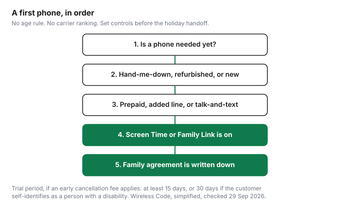

Technology · Canada
Giving a Kid Their First Phone This Holiday: Device, Plan and Controls
A low-cost first phone for a kid in Canada is a hand-me-down, refurbished or new budget phone on a prepaid, added-line, talk-and-text or data-only plan, with Apple Screen Time or Google Family Link set up before the holiday. A first phone given as a holiday gift is often a flagship on a large plan, bought in the same week as the wrapping paper. The phone will outlast the excitement. The plan will bill every month. This page is a low-cost path: whether a phone is needed, which device path fits, which plan structure fits, and which controls are already on the phone. It does not name an age, and it does not rank a carrier or a handset. Family app charges that show up after the phone is in a pocket are on kids' app subscriptions and Apple Family Sharing.
Key takeaways
- There is no age in the Wireless Code. Write down why the household wants a phone, who pays, and what happens if the agreement breaks.
- A hand-me-down, a refurbished phone, and a new budget phone are three paths. Security updates and whose account is on the phone matter more than the box being new.
- Prepaid, an added line, talk-and-text, and a data-only line are structures. This page does not quote live prices. Check the carrier.
- Apple Screen Time and Google Family Link are built in. Set them from the parent's device before the holiday morning.
- If the new contract has an early cancellation fee, the trial period is at least 15 days, or 30 days when the customer self-identifies as a person with a disability, and only if usage stays inside the limit and any provider device comes back near-new with its packaging.
Is it time?
A phone is a tool for contact, a ride home, or a school portal. It is also a bill, a loss risk, and a set of accounts.
Households land in different places for reasons that are not a product chart: a bus ride that used to be with a sibling, a shared tablet that no longer covers the afternoon, a school that messages parents through an app. None of those facts produces an age. This page will not supply one.
Write the job the phone has to do, in one sentence, before anyone opens a store page. "Call a parent and receive a text about pickup" is a different device and a different plan from "maps, group chats, and video." If the sentence is still vague, the holiday is a poor deadline. A shared household phone, checked out like a library book, remains a real option. So does waiting.
Get Cyber Safe, the federal public-awareness campaign at getcybersafe.gc.ca, as of 29 Sep 2026, groups its steps under accounts, devices including phones and tablets, and connections. The same homepage points to passphrases, multi-factor authentication, and reporting spam text messages to 7726. Use those steps when the phone is set up. They are security habits, not a verdict about whether a child should have a phone.
Money questions that belong in the same conversation
Who pays the monthly bill, and from which account? What is the ceiling if the plan is prepaid? Who pays for a replacement if the phone is lost, using the same coverage questions as phone and laptop protection plans? A flagship bought to avoid that conversation usually recreates it in January, with a larger number.
Hand-me-down vs new vs refurbished
Three paths cover most first phones. A hand-me-down is a phone the household already owns.
A refurbished phone is a used phone a seller has tested and resold. A new budget phone is a current model at the low end of that maker's range. This page does not pick one, and it does not quote a refurbished grade or a price. Check the seller.
On a hand-me-down, check two things on the maker's support page: whether that model still receives security updates, and how to see battery health. Apple's battery page, as of 29 Sep 2026, shows maximum capacity under Settings, then Battery, then Battery Health, on iPhone 6 and later. A tired battery is a repair question on battery replacement versus a new phone, not a reason to finance a flagship. Put the child on their own Apple Account or Google Account. A shared login mixes purchases, messages, and Screen Time in a way the controls cannot separate. Family Sharing is how Apple expects a child's account to sit inside the household. The subscription side of that setup is the Family Sharing guide.
A refurbished phone needs the seller's return window and a statement of what was tested, in writing, before you pay. Grades and restocking fees differ by seller. Check the retailer. Since 1 December 2017, the CRTC's news release says newly purchased devices must be provided unlocked, and a device that is locked is unlocked free on request. The Wireless Code, simplified, says the same: a device provided for wireless service must be provided unlocked, and a locked device is unlocked at no charge on request. Confirm the refurbished phone is unlocked before you choose a plan. The financing and unlock rules are on buying outright versus carrier financing.
| Path | What is in its favour | What to check before you rely on it |
|---|---|---|
| Hand-me-down | No new hardware spend. You already know the charger and the quirks. | Security updates still offered. Battery health. A separate child account, not a shared login. |
| Refurbished | A tested used phone when nobody has a hand-me-down. | The seller's written return window and grade. Unlocked. Check the retailer. No grade is quoted here. |
| New budget phone | A current warranty and, for a device from a provider, the unlock rule above. | You are not financing a flagship you do not need. Price: check the retailer or the manufacturer. |
Plan types for kids
The plan should match the one-sentence job. A phone that only needs calls and texts does not need a large data allotment.
A phone that is the homework portal does. Four structures cover the choice. Live prices change and were not collected here. Check the carrier. Structures, including flanker brands and bring-your-own-phone plans, are explained without a ranking on cheaper cell plans.
| Type | How it behaves | Watch for |
|---|---|---|
| Prepaid | Service runs while the balance lasts. Spending has a hard stop when the balance hits zero. | When the commitment period ends, the Code gives at least seven days to top up, at no charge, and keep the balance. Data overage rules differ. The Code's $50 data-overage cap is in the postpaid overage section. Read which sections apply to prepaid. |
| Added line on a postpaid account | The line sits on the household bill. One account holder consents to charges past the caps. | The account holder is responsible. The 2017 CRTC release says the account holder consents, by default, to data overage and data roaming past the caps, which that release states as $50 and $100 per month, on a per-account basis. |
| Talk-and-text | Voice and messages without a data allotment sized for video. | Apps may still use data if a data add-on or an overage path exists. Confirm the line cannot silently add data. Check the carrier. |
| Data-only | A tablet or a phone that uses data and Wi-Fi calling, if the carrier offers that feature. | Emergency calling and whether a phone number exists. Check the carrier. Do not assume a data-only line places ordinary voice calls. |
The Wireless Code applies in full to postpaid services. For prepaid, the simplified Code lists the sections that apply, including device unlocking, the early-cancellation sections, and the prepaid-balance rule. Do not assume a prepaid line has no Code rights, and do not assume every postpaid protection is copied onto prepaid. Read the list on the CRTC page.
If the contract charges an early cancellation fee, the trial period is part of the purchase, including a holiday gift activated in December. It lasts a minimum of 15 calendar days from the day service begins. For a single-user plan, the provider's usage limits for that trial must be at least half of the permitted monthly usage in the contract. If the customer self-identifies as a person with a disability, the trial is at least 30 calendar days, and the permitted usage must be at least double the provider's standard trial amounts. During the trial you can cancel without an early cancellation fee if you have used less than the permitted usage and you return any device the provider supplied, in near-new condition, including the original packaging. Cancellation takes effect the day the provider receives notice. A phone bought outright from a retailer, with no provider device and no early cancellation fee, is a store-return question instead. That path is on holiday electronics returns.
Parental controls
The controls worth setting up first are the ones the platform includes, at no extra subscription. Apple's support page "Use Screen Time to manage your child's iPhone or iPad," as of 29 Sep 2026, says Screen Time shows how a child uses the iPhone or iPad, and that parental controls on iPhone, iPad, and Mac manage apps and content, who the child communicates with, and when the device is used.
The page says to set this up from the parent or family-organizer's device: Settings, Family, the child's name, Screen Time. It also says a child needs their own Apple Account, and that if you manage the account with Family Sharing, the organizer sets the Screen Time passcode on the parent's device, not the child's. The same page describes a newer set of controls in iOS 27, iPadOS 27, and the matching Mac, watch, and visionOS versions, and says you can keep using the previous Screen Time if every device in the family group cannot be updated. Age-related defaults on that page vary by country. Read the page rather than copying a US age into a Canadian household.
Google's help page "Create a Google Account for your child," as of 29 Sep 2026, says you can create an account for a child under 13, or the applicable age in your country, and manage it with Family Link. With a supervised account the child can use products such as Search, Chrome, and Gmail, and you can set parental controls. A child above that age can have their own account, and supervision can be added. The page says supervision can be stopped, and that you are notified if the child stops it. Family Link is the control. It is not a content filter you have to buy.
App stores and video services bill on top of the phone plan. Ask to Buy, on Apple's page, sends you a request before an eligible purchase. Google's Family Link page is the place to supervise the Google Account those apps use. Streaming that the whole household already pays for is a separate bill: YouTube Premium Family is one example of a family plan, not a reason to add a phone plan.
| Control | What the help page says you can do | Where to start |
|---|---|---|
| Apple Screen Time | See use, manage apps and websites, communication, time allowances, and content restrictions. Set the passcode on the parent's device when Family Sharing manages the child account. | Apple Support: Screen Time for a child's iPhone or iPad |
| Google Family Link | Supervise a child's Google Account, including one you create under the age the page states for your country, and set parental controls. | Google Families: create a Google Account for your child |
Family plans and data limits
An added line feels small on a family bill until the data is shared and one phone uses it. The Wireless Code's caps are per account, not per phone.
The simplified Code says a provider must suspend data overage charges once they reach $50 in a single monthly billing cycle, unless the account holder or an authorized user expressly consents to more. The cap is free. It applies per account, however many devices are on it. A flex plan and a data add-on have extra sentences on that page: read them if the line is not a flat allotment. The 2017 news release says the account holder is, by default, the person who consents past the established caps.
That $50 is a backstop against a surprise, not a data plan. If you do not want overage at all, confirm with the carrier that the line stops at the allotment instead of billing toward the cap. Roaming is a different cap. The CRTC's roaming page, as of 29 Sep 2026, says providers cannot charge more than $100 for roaming per billing cycle unless you explicitly agree to pay more. A first phone that travels to the US is the roaming guide. Turn data roaming off before a border trip if the job of the phone does not include maps abroad.
A mobile-and-home bundle can lower a household bill and can also make the phone line harder to see. The bundle math, separate from this first-phone choice, is on mobile and home internet bundles. Do not add a child's line to a bundle until you know which discount disappears if you later remove the line.
Checklist
Do this before the phone is wrapped. The trial clock, if there is an early cancellation fee, starts when service begins, not when the wrapping comes off.
| Step | Done when |
|---|---|
| Job of the phone | One sentence: calls only, or calls plus a named set of apps. |
| Who pays | The account and the ceiling are written down. Prepaid balance or postpaid cap is understood. |
| Device path | Hand-me-down, refurbished, or new. Updates, battery, and unlock are checked. |
| Child's own account | Apple Account or Google Account is the child's. Family Sharing or Family Link is on. |
| Controls | Screen Time or Family Link is set from the parent's device. Passcode is not the child's birthday if you can choose one. |
| Plan type | Prepaid, added line, talk-and-text, or data-only. Price as listed on the carrier's page that day. |
| Trial and return | If an early cancellation fee applies: 15 days, or 30 days for a customer who self-identifies as a person with a disability; usage under the limit; provider device back near-new with packaging. Store return, if any: check the retailer. |
| Family agreement | Where the phone charges, what happens if it is lost, and how to contact the parent. Written, not implied. |

The Canadian Anti-Fraud Centre, as of 29 Sep 2026, says it collects fraud and identity-theft information and that it does not contact people to ask for money. A text that pretends to be a carrier, a school, or the phone's warranty desk belongs in that category. Report it to the Centre and to the carrier. Do not pay a "warranty" or "account" caller who reached out first.
Sources
- CRTC, The Wireless Code, simplified, as of 29 Sep 2026: trial of at least 15 days, or 30 days if the customer self-identifies as a person with a disability; usage at least half of monthly permitted use on a single-user plan; disability trial usage at least double the standard trial amounts; cancel without early cancellation fee only under the usage and near-new return conditions; cancellation effective when the provider receives notice; devices provided unlocked and unlocked free on request; $50 data-overage cap per account unless you consent; prepaid top-up of at least seven days; which sections apply to prepaid.
- CRTC news release, 15 June 2017, canada.ca, as of 29 Sep 2026: from 1 December 2017, unlock free on request and new devices provided unlocked; account holder consents by default past caps the release states as $50 data overage and $100 roaming per month, per account.
- CRTC, international roaming fees, as of 29 Sep 2026: providers cannot charge more than $100 for roaming per billing cycle unless you explicitly agree to pay more.
- Apple Support, Screen Time for a child's iPhone or iPad, as of 29 Sep 2026. Google Families Help, create a Google Account for your child, as of 29 Sep 2026. Apple, iPhone battery and performance, as of 29 Sep 2026.
- Get Cyber Safe homepage, as of 29 Sep 2026. Canadian Anti-Fraud Centre homepage, as of 29 Sep 2026. Plan prices and refurbished grades: check the carrier or retailer.
Frequently asked questions
What age should a child get a first phone?
There is no age in the Wireless Code, and this page does not set one. Households weigh contact, travel, and whether a shared device still does the job. Write the job of the phone in one sentence before you buy. The decision is the family's.
Is a hand-me-down phone OK for a kid?
A hand-me-down can be a complete first phone if it still receives security updates and the child has their own account. Check battery health on the maker's steps, and set Screen Time or Family Link before you hand it over. A shared login mixes purchases and controls.
What kind of plan is best for a first phone?
Match the plan to the job: prepaid if you want a hard stop, an added line if the household already has postpaid, talk-and-text if data is not the point. No carrier is ranked here. If an early cancellation fee applies, use the trial period and check the price on the carrier's own page.
What free parental controls are there?
Apple Screen Time and Google Family Link are built in. Screen Time is set from a parent's device through Family Sharing, on the steps Apple's support page describes. Family Link supervises a child's Google Account, including the age rule that page states for your country. Both help pages were current as of 29 Sep 2026.
Can I cancel if the plan doesn't work out?
If the contract has an early cancellation fee, the Wireless Code requires a trial of at least 15 days, or 30 days if the customer self-identifies as a person with a disability. You cancel without that fee only if usage stays under the permitted amount and any device from the provider comes back near-new, with its packaging. Cancellation takes effect the day the provider receives notice.
Researched and drafted with AI assistance and fact-checked against official Canadian sources. How we create content.
Disclosure: Carrier offer types and refurbished-device offer types are offer types. Saving Optimizer may earn a commission if a partner link is added later. No partnership is claimed. No carrier, plan, or refurbished seller is ranked. Education only. This is not parenting advice.